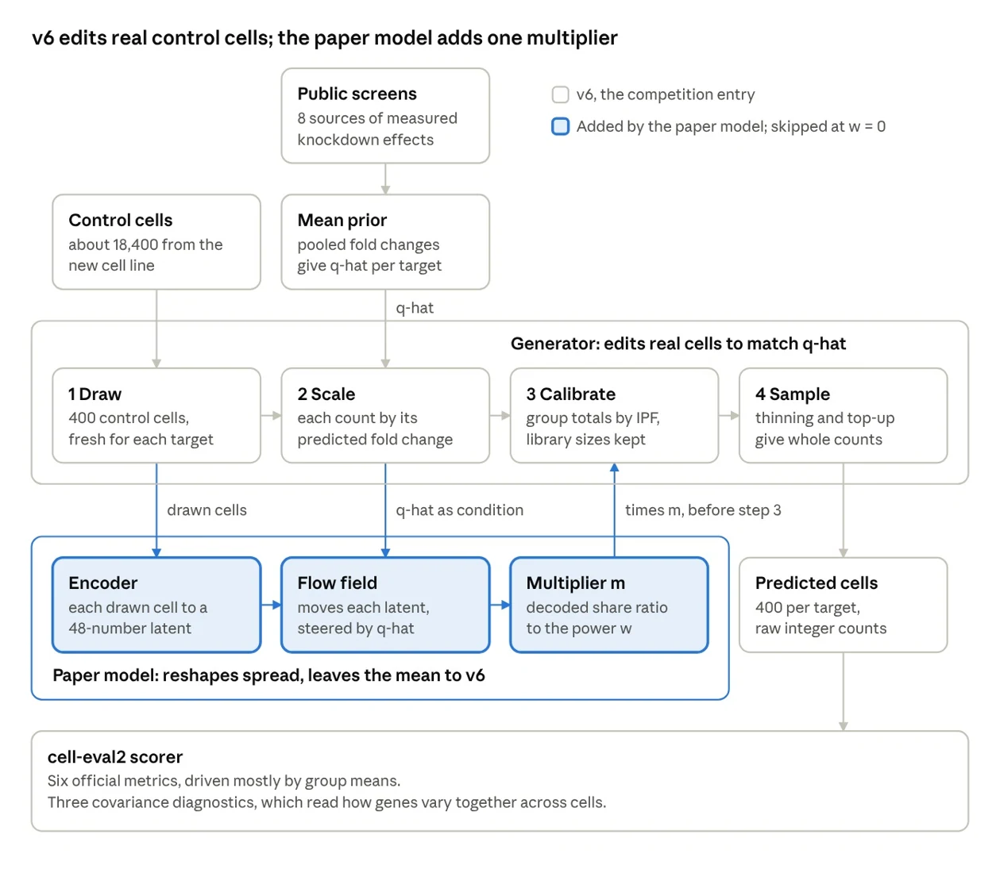

Virtual Cell Challenge
Predicting single-cell perturbation responses
How well can a model predict single-cell expression after perturbation in a new cellular context?
VCC · Team bio
Team bio on the final leaderboard
The final submission, vcc26-final-v6-lfc-orion-cd4, ranked 243rd among 806 teams, with an overall score of 0.1586. The frozen validation snapshot recorded rank 803 of 1,629 and score 0.0830 for the earlier validation model.
| Split | Rank | Score |
|---|---|---|
| Final test | 243 / 806 | 0.1586 |
| Frozen validation | 803 / 1,629 | 0.0830 |
The submitted perturbation pipeline
Eight public screens provided a pooled fold-change estimate for each target. The model drew 400 control cells per target, scaled expression counts, calibrated group totals while retaining library sizes, and sampled integer counts. The blue flow-model extension was separate from the scored v6 entry.


Challenge results · Official challenge leaderboard